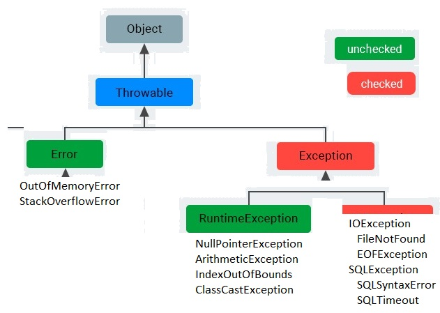

Try with Resources
Resource иммплементирует интерфейс Closable
Reader, Writer, FileReader, BufferedReader, InputStream, OutputStream, Socket, ServerSocket.
или AutoClosable
(JDBC) Connection, Statement, ResultSet.
Если исключение и в try и при close(), то основным будет из try, из close() будет подавленным. (проверено)
public void doSolution() {
try (Resource resource = new Resource()) {
throw new Exception("MAIN_EXC");
} catch (Exception e) {
// Основным будет MAIN_EXC. CLOSING_EXC попадёт в suppressedExceptions
}
}
class Resource implements AutoCloseable {
@Override
public void close() throws IOException {
throw new IOException("CLOSING_EXC");
}
}
*******************************
Происходит эксэпшн в try и в finally. Будет тот, что в finally. Подавленного не будет (проверено)
*******************************
Если несколько блоков Catch, то сначала специфичные (дети), потом родители
catch (NumberFormatException | NullPointerException){...}
можно try + catch, можно try + finally.
public int doSolution() { // Вернёт 5 !!!
try{
return 3;
}finally{
return 5;
}
}
